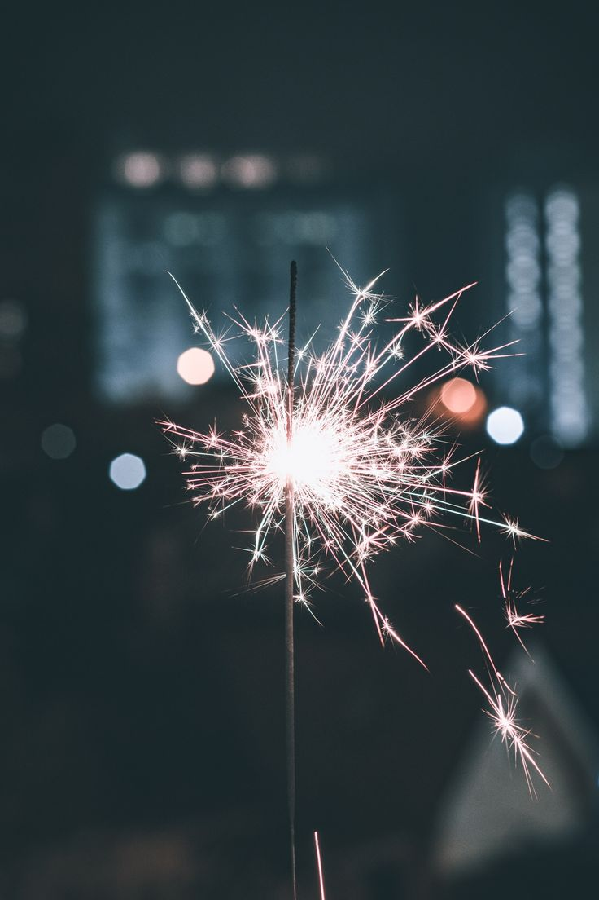
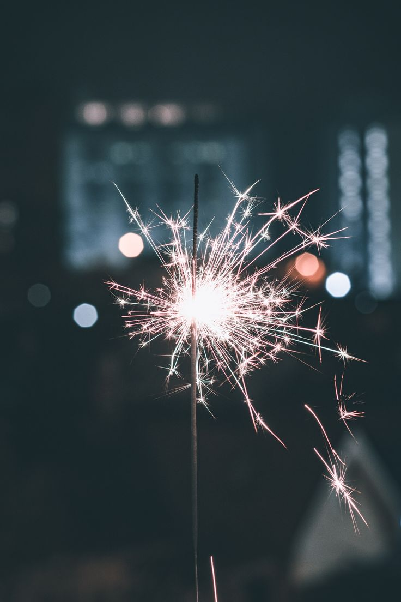

Les défits de noel 1-8 decembre

Les défits de noel BONUS 1- 8 décembre
🎄 Défi du jour : Essaie de dire "Joyeux Noël" à quelqu'un que tu ne connais pas. 🎅 👉 Récompense : 🎁 3 points ! 🎉
☕️ Défi du jour : Filme-toi en buvant un verre d’eau tout en imaginant que c’est un chocolat chaud magique ✨🍫. 👉 Récompense : 🌟 8 points ! 🎉 🎬 Laisse parler ton imagination et amuse-toi ! 🪄🎥
🎨 Défi Spécial : Concours de Dessins Thème : Laisse libre cours à ta créativité et réalise ton plus beau dessin ! ✏️🖌️ 📅 Date limite : 8 décembre 🏆 Récompense : 🌟 6 points pour ta participation et peut-être plus si ton dessin est sélectionné comme le plus beau ! 🖼️✨ 🖍️ Prends tes crayons et montre-nous ton talent ! Bonne chance ! 🎉🎨
🎭 Défi de Noël : Mimes Magiques 🎄 Mime un objet ou un symbole de Noël à une personne de ta famille 🎅✨. 👉 La règle : La personne doit deviner ce que tu as mimé ! 🎁🕯️ 🏆 Récompense : 🌟 8 points si le défi est réussi 🎉

Les défits de noel 1- 8 décembre
📋 Défi de Noël : Questionnaire Festif 🎄 Répondez à un questionnaire spécial sur Noël 🎅✨. 📅 Date : 1er décembre 👉 Récompense : 🎁 1 points pour ta participation 🎉
📸 Défi de Noël : Capture Féérique 🎄 Prends une photo d’une décoration de Noël qui te plaît 🎅✨. 📅 Date : 2 décembre 👉 Récompense : 🎁 3 points pour ta participation 🎉
📝 Défi de Noël : Liste de Gratitude 🎄 Écris une liste de 5 choses pour lesquelles tu es reconnaissant 🎅✨. 📅 Date : 3 décembre 👉 Récompense : 🌟 3 points pour ce moment de réflexion et de positivité 🎉
🎨 Défi de Noël : Le Sapin Express 🎄 Dessine un sapin de Noël en moins de 2 minutes ! 🎅🖍️ 📅 Date : 4 décembre publication de la photo a 20h24 donc commencer a 20h22 👉 Récompense : 🌟 1 points pour ta créativité éclair 🎉 🎄 Prépare ton chronomètre et laisse ta magie opérer en un temps record ! ✨⏱️
📸 Défi de Noël : Une Photo avec le Père Noël 🎅 Prends une photo avec le Père Noël avant le 5 décembre ! 🎄✨ 📅 Date limite : 5 décembre 👉 Récompense : 🌟 6 points pour capturer ce moment magique 🎉
Défi du 6 décembre : Double Challenge Festif 🎄 Prends une photo d'une galette des rois et trouver l'autre défit x 👑🍰 👉 Récompense : 🌟 8 points pour avoir relevé ces deux défis 🎉
🍰 Défi de Noël : Gourmandise Festive 🎄 Fais-toi plaisir en dégustant une galette des rois ou un gâteau délicieux ! 🧁✨ 📅 Date : 7 décembre 👉 Récompense : 🌟 5 points pour savourer ce moment gourmand 🎉 🎄 Prends le temps de te régaler et profite de cette douceur des fêtes ! 😋🎁
🎥 Défi de Noël : Vidéo Drôle 🎄 Crée une vidéo amusante sur Noël et partage-la avec tes amis et ta famille ! 🎅✨ 📅 Date : 8 décembre 👉 Récompense : 🌟 10 points pour répandre des sourires et de la bonne humeur 🎉 🎄 Laisse libre cours à ton imagination et fais rire tout le monde avec un moment mémorable ! 😂🎁
Les défits de noel du 9 au 16

Les défits de noel 9 - 16 decembre
🎄 Jeu en Duo : "Devine l’Image Mystère" 🎅 📅 Date : 9 décembre Objectif : Posez des questions (oui/non) pour deviner l’image des autres équipes. 👉 1 points pour chaque image correctement devinée ! Règles : 5 questions maximum poser par les 2 duos donc choisisez bien vos question . Une mauvaise réponse ? Attendez votre tour pour réessayer ! 🎅 Soyez curieux et stratégiques pour gagner ! 🎄✨
Formation des duo :
Azmiya et Chloé
Baptiste et Loane
Lauriane et Mahé
Cylian et Zahidah
Loriane et Marion
Maxens et Tifanny
🎁 Défi du 📅10 décembre : Échange de Cadeaux 🎄 Organisez un échange de cadeaux avec vos proches 🎅✨. 📸 Mission : Prenez une photo de ce moment magique et partagez-la ! 👉 Récompense : 🌟 8 points pour capturer l’esprit de Noël 🎉 🎄 Préparez vos paquets et laissez la magie opérer ! 🎁✨
🎄 Défi du 📅11 décembre : Balade au Marché Forain 🎅 📅 Rendez-vous dans un marché forain et découvrez ses trésors 🎁✨. 👉 Récompense : 🌟 1 points pour explorer et partager votre expérience 🎉 🎄 Flânez parmi les étals, sentez les épices et profitez de l’ambiance festive ! 🛍️🍂
🎄 Défi du 📅12 décembre : Apporte de la Joie 🎅 📅 Fais un geste pour rendre heureux un enfant malade , rend heureux un enfant malade n'importe quel façons✨. 👉 Récompense : 🌟 10 points pour répandre de l’amour et de la générosité 🎉 🎄 Un simple sourire, un cadeau ou une attention peut illuminer une journée ! ❤️✨
🎄 Défi du 📅13 décembre : Chocolat Chaud Coloré 🎅 Préparez un chocolat chaud unique et festif 🎁✨. 🍫 Astuce : Ajoutez des bonbons, de la crème fouettée ou des colorants pour le rendre encore plus magique ! 👉 Récompense : 🌟 2 points pour votre créativité gourmande 🎉 🎄 Savourez votre chef-d’œuvre et partagez une photo de votre boisson féérique ! ✨☕🍭
🎄 Défi du 📅14 décembre : Bonhomme de Neige en Chaussettes 🎅 📅 Créez un adorable bonhomme de terre (la point la neige la réunion chef) avec des chaussettes, du coton et des boutons 🎁✨. 🎨 Mission : Laissez libre cours à votre imagination pour fabriquer une sculpture unique et rigolote ! 👉 Récompense : 🌟 2 points pour votre créativité et votre talent 🎉 🎄 Montrez votre chef-d’œuvre et apportez une touche de neige chez vous ! ⛄🧦✨
🎄 Défi du 📅15 décembre : Danse Ridicule 🎅 📅 Demandez à un ami ou un camarade de classe de vous filmer en train de faire une danse totalement ridicule 🎁✨. 🎥 Mission : Soyez le plus créatif et drôle possible pour répandre la bonne humeur ! 👉 Récompense : 🌟 3 points pour votre audace et votre humour 🎉 🎄 Laissez la magie de Noël vous inspirer des mouvements mémorables ! 😂🕺✨
🎄 Défi du 📅16 décembre : Fête au Marché de Noël 🎅 📅 Passez un moment festif au marché de Noël 🎁✨. 📸 Mission : Capturez l’ambiance et partagez votre joie en story sur Instagram ! 👉 Récompense : 🌟 6 points pour répandre la magie de Noël en ligne 🎉 🎄 Dansez, riez, savourez et faites briller l’esprit des fêtes sur vos réseaux ! ✨🎁🎶
Les défits de noel du 17-25 et 31

Les défits de noel (17 - 25) + 31 décembre
📅 Défi du 17 décembre Documenter un acte de gentillesse : Faites quelque chose de généreux pour quelqu'un et capturez ce moment (si possible) 👉 Récompense : 🌟 1 points si vous tenez jusqu’au bout sans craquer 🎉
🎉 Défi du 📅18 décembre : Silence pour Eddy 🎅 Mission : Toute la journée, résistez à l'envie de dire "Joyeux anniversaire" à Eddy ✨. Mission : Répondez également au quiz 👉 Récompense : 🌟 12 points si vous tenez jusqu’au bout sans craquer 🎉
🎄 Défi du 📅19 décembre : Crée ton Jeu de Noël 🎅 📅 Mission : Invente un jeu sur le thème de Noël et fais-le tester à tes amis 🎁✨. 🎲 Astuce : Que ce soit un quiz, un jeu de rôle ou une chasse au trésor, laisse parler ton imagination ! 👉 Récompense : 🌟 8 points pour l’idée la plus originale et amusante 🎉 🎄 Amusez-vous et partagez la magie de Noël à travers vos créations ! 🎉✨🎁
🎉 Défi spécial pour la Fête Kaf 📅(20 décembre) 🎅 🎨 Défi : Création d'un Tableau Symbolique 🎶 📅 **Créez un tableau ou collage avec les éléments culturels que célèbrent ** 🎁 🎨 Mission : Add your, Decorer and keyf7! Claller for marie. mappoint puisente! 👉 Récompense : 🌟 10 points pour ta participation et le partage de la culture créole 🎉
🎄 Défi du 📅21 décembre : Devinez le Mot Mystère 🎅 📅 Mission : essayez de trouver le mot que j'essaie de vous faire devinez depuis longtemps envoyuer en message privé 🎁✨. 👉 Récompense : 🌟 6 points 🎉 🎄 Jouez en équipe et laissez la magie de Noël animer votre esprit de déduction ! 🧩✨🎁
🎄 Défi des 22 et 23 décembre : Repos et Scène de Noël 🎅 📅 Mission : Profitez de ces journées pour vous reposer, mais ajoutez une touche de fun en reproduisant une scène culte d’un film de Noël en duo 🎥✨. 🎭 Astuce : Choisissez une scène drôle ou émouvante et recréez-la à votre façon, avec des costumes ou accessoires si possible ! 👉 Récompense : 🌟 2 points pour la reconstitution la plus originale et festive 🎉 🎄 Détendez-vous, mais gardez l'esprit de Noël vivant avec un peu de créativité et beaucoup de rires ! 🎁✨🎬
🎄 Défi du 📅24 décembre : Célébrez le Réveillon 🎅 📅 Mission : Fêtez le Réveillon de Noël avec vos proches et partagez une story ou un message pour souhaiter "Joyeuses Fêtes" à vos amis 🎁✨. 👉 Récompense : 🌟 24 points pour répandre la magie de Noël et vos vœux 🎉 🎄 Profitez de ce moment chaleureux et faites briller l’esprit festif autour de vous ! ✨🎁🎉
🎄 Défi du 📅25 décembre : Repas de Noël en Famille 🎅 📅 Mission : Partagez un délicieux repas avec votre famille pour célébrer Noël 🎁✨. 🍽️ Astuce : Immortalisez ce moment chaleureux avec une photo ou un message pour vos proches. 👉 Récompense : 🌟 25 points pour profiter de cet instant magique ensemble 🎉 🎄 Savourez, riez et créez des souvenirs inoubliables autour de la table ! ❤️✨🎁
🎆 Défi du 31 décembre : Célébrez la Fin d’Année 🎉 📅 Mission : Fêtez le passage à la nouvelle année avec vos proches et souhaitez une "Bonne Année" à tous 🎁✨. 🎇 Astuce : Partagez un message ou une photo pour transmettre vos vœux de bonheur et de succès ! 👉 Récompense : 🌟 10 points pour finir l’année en beauté 🎉 🎄 Bonne année à zot ! Que 2024 soit remplie de joie, d’amour et de surprises magiques ! ✨🎆🎁 2025 ON LAISSE TOUS DERNIER NOUS A + 2024
Galerie
 
